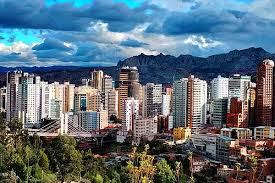
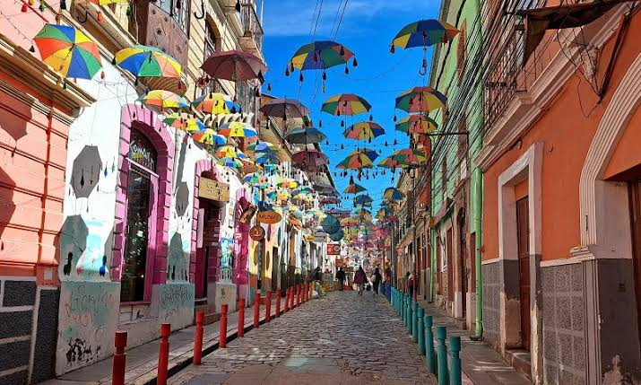
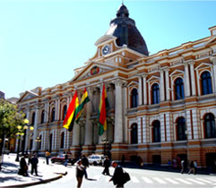
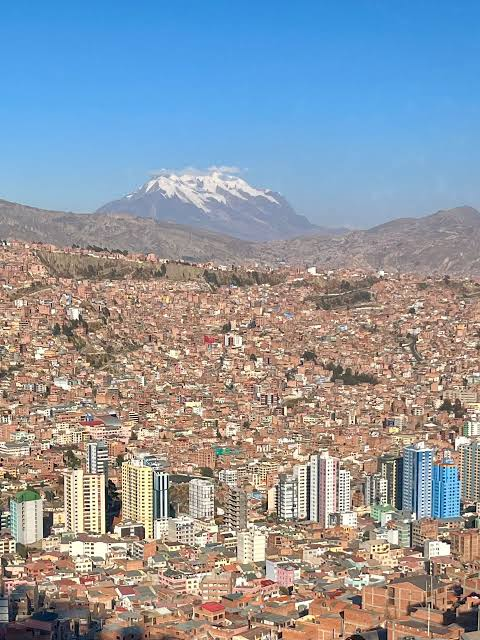

historias
El 20 de octubre es una fecha que concentra múltiples acontecimientos de gran relevancia para la historia mundial, latinoamericana y local, abarcando desde fundaciones coloniales y revoluciones políticas hasta hitos culturales y de paz:
Fundación de La Paz (1548): El capitán español Alonso de Mendoza fundó la ciudad de Nuestra Señora de La Paz (inicialmente en la localidad de Laja y trasladada poco después a su ubicación actual) por orden de Pedro de la Gasca. Su propósito principal era servir como un punto estratégico de descanso y articulación comercial en la ruta minera y virreinal de los Andes. La Revolución de Octubre en Guatemala (1944): Un movimiento cívico-militar compuesto por estudiantes, maestros, trabajadores y militares jóvenes derrocó al régimen dictatorial de Federico Ponce Vaidés. Este suceso dio inicio a la llamada "Primavera Democrática", un periodo de diez años de reformas sociales, laborales y educativas en el país centroamericano. Hitos bélicos y tratados de paz históricos: En 1883 se firmó el Tratado de Ancón, acuerdo con el que Perú puso fin formalmente a su participación en la Guerra del Pacífico frente a Chile. Asimismo, en el ámbito contemporáneo, el 20 de octubre de 2011 marcó el fin de décadas de violencia terrorista cuando la organización armada ETA anunció el cese definitivo de sus operaciones en España. Acontecimientos culturales y tecnológicos: Un día como este vio nacer hitos editoriales y tecnológicos de impacto global, como la publicación en 1955 de El retorno del Rey, la conclusión de la famosa trilogía de J.R.R. Tolkien El Señor de los Anillos, y en 2004 el lanzamiento de la primera versión del popular sistema operativo de código abierto Ubuntu.
 |  |
 |  |